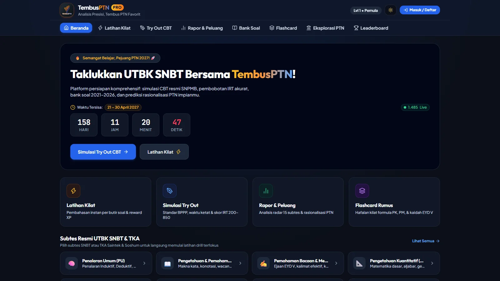

Case Study · Web App
TembusPTN.my.id
A free CBT simulation and UTBK/SNBT preparation platform that brings practice, scoring, and progress tracking into one place.

Context
UTBK/SNBT preparation usually means juggling scattered question banks, paid try-outs, and separate score tracking. TembusPTN brings those pieces into a single web app, so students can practise, simulate the exam, and see their progress without switching tools.
My role
I worked on the frontend implementation: turning product requirements into responsive screens, structuring question navigation, and keeping practice views readable and distraction-free. The focus was the interface layer — layout, typography, navigation, and interaction states.
What the product includes
- CBT try-out — a timed exam simulation with IRT scoring and a score report.
- Drill mode — focused practice with instant explanations after each question.
- Question bank — SNBT/TKA practice material across multiple exam years.
- Flashcards — quick review for formulas and language rules.
- SNBP report — grade-based evaluation and study-program rationalisation.
- Leaderboard and profile — progress, XP, and practice history in one view.
Interface decisions
- Question navigation stays clear. The passage, question, and answer options keep a readable hierarchy so students can move without losing context.
- Typography is tuned for long sessions. Comfortable line length and spacing matter when a single try-out can run for hours.
- Practice stays usable on a phone. Responsive layouts keep the core flow intact on smaller screens instead of shrinking the desktop view.
- Distraction-free practice views. Interface chrome steps back during practice so the question remains the focus.
Outcome
TembusPTN is live and publicly accessible at tembusptn.my.id. The interface is built to support practice across desktop and mobile.
This case study focuses on the frontend work. Product features are listed for context, not as individual claims.